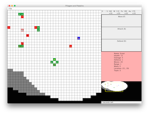

Projects
Pillagers and Paladins♦2014 - 2015

Pillagers and Paladins is a multiplayer RTS game, similar to Starcraft. Multiple users can connect to a central server to play against each other or together on teams. The project also features a computer controlled player capable of exploring the map and defending its base.